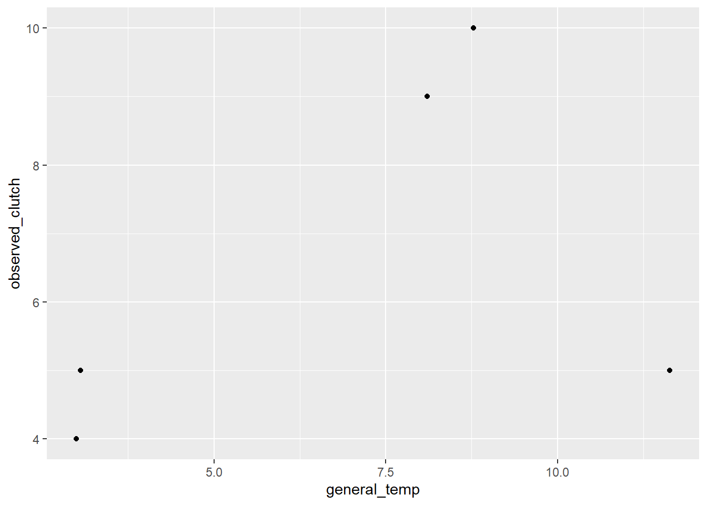
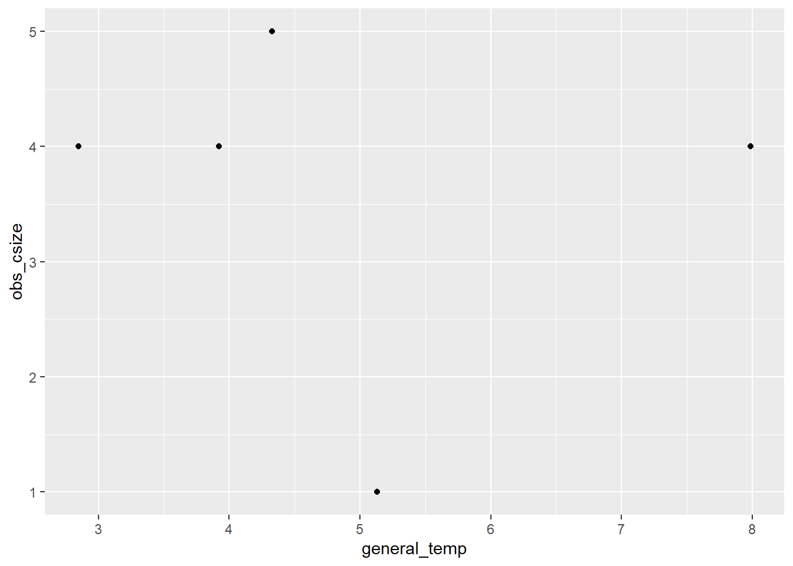
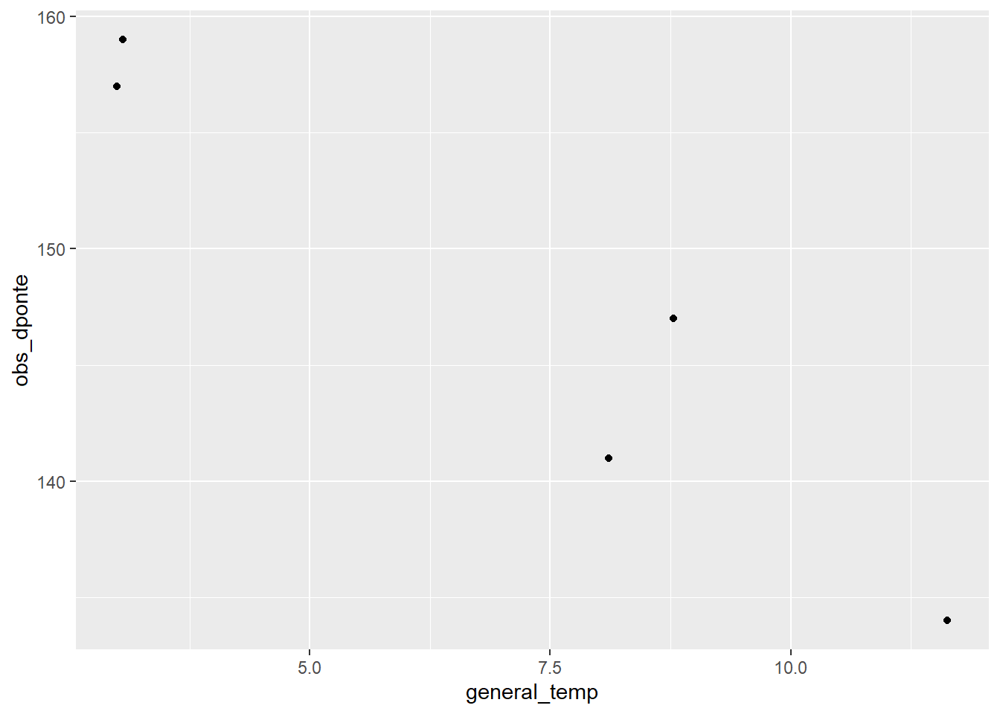
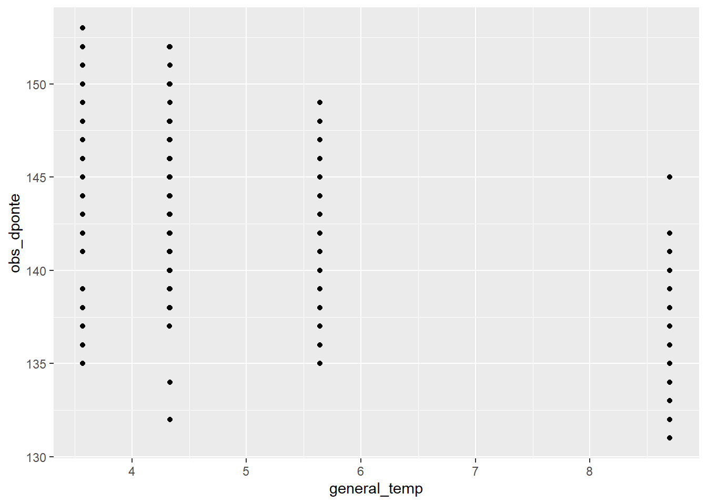
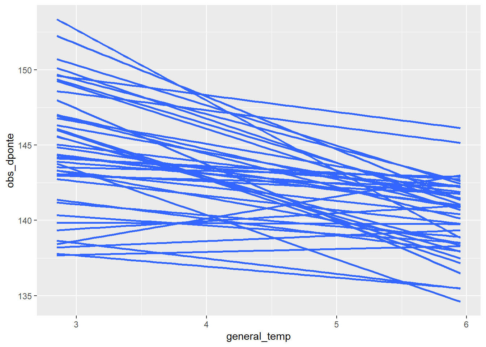
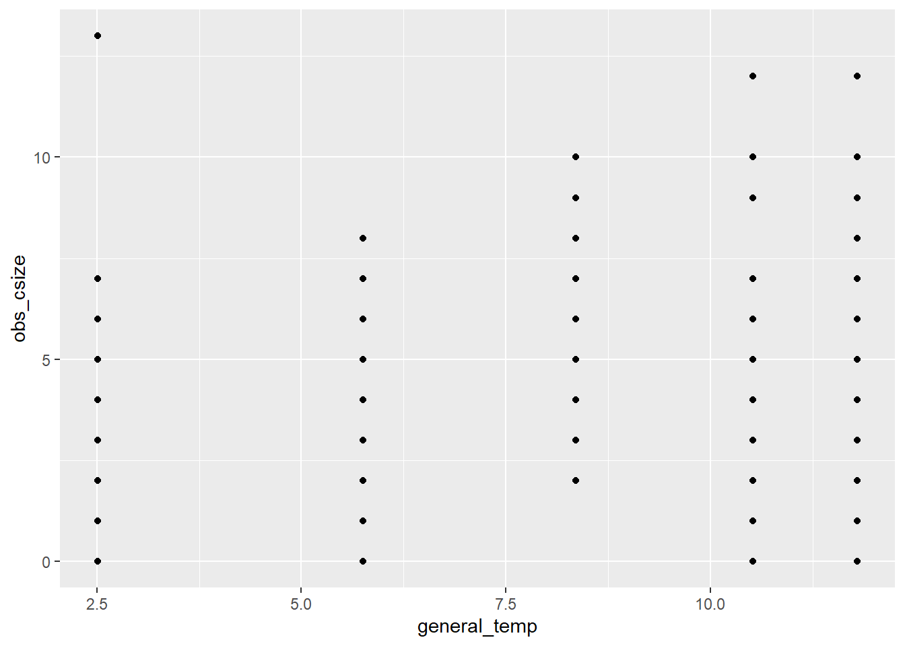
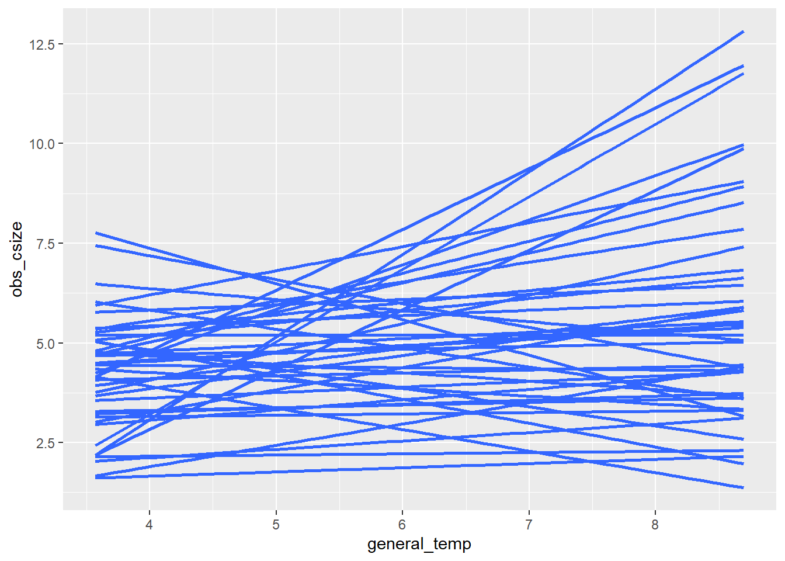

library(targets)
library(ggplot2)
library(tidyverse)
library(tidybayes)Data simulation
RARE to have more than two years per female
let’s start with one female
n <- 1
avg_csize <- 5
lifespan <- 5
general_temp <- runif(lifespan, 2, 12)
general_temp_c <- general_temp - mean(general_temp)fecundity
\[ \begin{align} \text{eggs} &\sim \text{Poisson}(e^{\beta_0 + \beta_1*(x - \bar{x})}) \end{align} \]
library(tidyverse)
effet_temp <- .1
one_bird <- tibble(year = 1:lifespan,
general_temp,
general_temp_c,
expected_clutch = log(avg_csize) + effet_temp * general_temp_c,
observed_clutch = rpois(n = length(year),
lambda = exp(expected_clutch)))
one_bird# A tibble: 5 x 5
year general_temp general_temp_c expected_clutch observed_clutch
<int> <dbl> <dbl> <dbl> <int>
1 1 4.33 -0.514 1.56 4
2 2 2.85 -2.00 1.41 2
3 3 5.13 0.289 1.64 4
4 4 7.99 3.14 1.92 9
5 5 3.92 -0.922 1.52 2Make a simple model to measure
summary(glm(observed_clutch ~ general_temp_c, data = one_bird))
Call:
glm(formula = observed_clutch ~ general_temp_c, data = one_bird)
Deviance Residuals:
1 2 3 4 5
0.5359 0.6560 -0.6133 0.3023 -0.8809
Coefficients:
Estimate Std. Error t value Pr(>|t|)
(Intercept) 4.2000 0.3616 11.616 0.00137 **
general_temp_c 1.4305 0.2083 6.869 0.00632 **
---
Signif. codes: 0 '***' 0.001 '**' 0.01 '*' 0.05 '.' 0.1 ' ' 1
(Dispersion parameter for gaussian family taken to be 0.653676)
Null deviance: 32.800 on 4 degrees of freedom
Residual deviance: 1.961 on 3 degrees of freedom
AIC: 15.51
Number of Fisher Scoring iterations: 2one_bird |>
ggplot(aes(x = general_temp, y = observed_clutch)) +
geom_point()
Date of laying
When do birds lay eggs?
avg_dponte <- 138
effet_temp_dponte <- -3
one_bird_dponte <- tibble(year = 1:lifespan,
general_temp,
general_temp_c,
expected_dponte = avg_dponte + effet_temp_dponte * general_temp_c,
observed_dponte = round(rnorm(n = length(year),
mean = expected_dponte,
sd = 5)))one_bird_dponte |>
ggplot(aes(x = general_temp, y= observed_dponte)) +
geom_point()summary(lm(observed_dponte ~ general_temp_c, data = one_bird_dponte))
Call:
lm(formula = observed_dponte ~ general_temp_c, data = one_bird_dponte)
Residuals:
1 2 3 4 5
-1.152 -5.774 2.896 -2.273 6.302
Coefficients:
Estimate Std. Error t value Pr(>|t|)
(Intercept) 141.200 2.421 58.32 1.11e-05 ***
general_temp_c -3.794 1.395 -2.72 0.0725 .
---
Signif. codes: 0 '***' 0.001 '**' 0.01 '*' 0.05 '.' 0.1 ' ' 1
Residual standard error: 5.414 on 3 degrees of freedom
Multiple R-squared: 0.7115, Adjusted R-squared: 0.6154
F-statistic: 7.399 on 1 and 3 DF, p-value: 0.07254combine the two
Birds which lay earlier also lay larger eggs, possibly because they are High Quality Moms.
## population averages
pop_average_dponte <- 138
pop_average_csize <- 4
## Effect of quality
mom_quality <- 4
quality_on_dponte <- 2
quality_on_csize <- .2let’s observe five years for the high-quality Mom:
quality_effects <- tibble(
year = 1:lifespan,
mom_quality = mom_quality,
general_temp,
general_temp_c,
## Effect of temperature -- does it depend on quality? let's say that it DOES (for now)
effet_temp_dponte_qual = -.7*mom_quality,
effet_temp_csize_qual = .1*log(mom_quality),
# csize
mom_avg_csize = log(pop_average_csize) + quality_on_csize*log(mom_quality),
temp_avg_csize = exp(mom_avg_csize + effet_temp_csize_qual*general_temp_c),
# dponte
mom_avg_dponte = pop_average_dponte + quality_on_dponte*mom_quality,
temp_avg_dponte = mom_avg_dponte + effet_temp_dponte_qual*general_temp_c,
## observations
obs_csize = rpois(n = length(year), lambda = temp_avg_csize),
obs_dponte = rnorm(n = length(year), mean = temp_avg_dponte, sd = 3) |> round()
)Some of these values are unreasonable! we can adjust later
quality_effects |>
ggplot(aes(x = general_temp, y = obs_csize)) +
geom_point()
quality_effects |>
ggplot(aes(x = general_temp, y = obs_dponte)) + geom_point()
Multiple females
We can repeat this process for multiple females at once!
n_females <- 42
lifespan <- 5
general_temp <- runif(lifespan, 2, 12)
general_temp_c <- general_temp - mean(general_temp)
mom_qualities <- runif(n_females, min = 0, max = 4)
many_moms_temperature <- expand_grid(year = 1:lifespan,
idF1 = 1:n_females) |>
mutate(mom_quality = mom_qualities[idF1],
general_temp = general_temp[year],
general_temp_c = general_temp_c[year],
## adding the biology
## Effect of temperature -- does it depend on quality? let's say that it DOES (for now)
effet_temp_dponte_qual = -.7*mom_quality,
effet_temp_csize_qual = .1*log(mom_quality),
# csize
mom_avg_csize = log(pop_average_csize) + quality_on_csize*log(mom_quality),
temp_avg_csize = exp(mom_avg_csize + effet_temp_csize_qual*general_temp_c),
# dponte
mom_avg_dponte = pop_average_dponte + quality_on_dponte*mom_quality,
temp_avg_dponte = mom_avg_dponte + effet_temp_dponte_qual*general_temp_c,
## observations
obs_csize = rpois(n = length(year), lambda = temp_avg_csize),
obs_dponte = rnorm(n = length(year), mean = temp_avg_dponte, sd = 3) |> round()
)let’s plot it!
many_moms_temperature |>
ggplot(aes(x = general_temp, y = obs_dponte)) +
geom_point()
many_moms_temperature |>
ggplot(aes(x = general_temp, y = obs_dponte, group = idF1)) +
stat_smooth(method = "lm", se = FALSE)`geom_smooth()` using formula 'y ~ x'
many_moms_temperature |>
ggplot(aes(x = general_temp, y = obs_csize)) +
geom_point()
many_moms_temperature |>
ggplot(aes(x = general_temp, y = obs_csize, group = idF1)) +
stat_smooth(method = "lm", se = FALSE)`geom_smooth()` using formula 'y ~ x'
model in brms
library(brms)Loading required package: RcppWarning: package 'Rcpp' was built under R version 4.1.3Loading 'brms' package (version 2.16.6). Useful instructions
can be found by typing help('brms'). A more detailed introduction
to the package is available through vignette('brms_overview').
Attaching package: 'brms'The following objects are masked from 'package:tidybayes':
dstudent_t, pstudent_t, qstudent_t, rstudent_tThe following object is masked from 'package:stats':
arglimpse(many_moms_temperature)Rows: 210
Columns: 13
$ year <int> 1, 1, 1, 1, 1, 1, 1, 1, 1, 1, 1, 1, 1, 1, 1, 1,~
$ idF1 <int> 1, 2, 3, 4, 5, 6, 7, 8, 9, 10, 11, 12, 13, 14, ~
$ mom_quality <dbl> 1.9589649, 3.4778713, 2.6337648, 2.0703548, 0.9~
$ general_temp <dbl> 3.997818, 3.997818, 3.997818, 3.997818, 3.99781~
$ general_temp_c <dbl> -2.915319, -2.915319, -2.915319, -2.915319, -2.~
$ effet_temp_dponte_qual <dbl> -1.3712754, -2.4345099, -1.8436353, -1.4492484,~
$ effet_temp_csize_qual <dbl> 0.067241622, 0.124642041, 0.096841429, 0.072772~
$ mom_avg_csize <dbl> 1.520778, 1.635578, 1.579977, 1.531838, 1.37224~
$ temp_avg_csize <dbl> 3.761233, 3.568721, 3.660697, 3.742242, 4.02580~
$ mom_avg_dponte <dbl> 141.9179, 144.9557, 143.2675, 142.1407, 139.864~
$ temp_avg_dponte <dbl> 145.9156, 152.0531, 148.6423, 146.3657, 141.766~
$ obs_csize <int> 3, 6, 4, 7, 1, 0, 2, 2, 2, 1, 4, 3, 4, 4, 3, 4,~
$ obs_dponte <dbl> 146, 148, 153, 149, 142, 143, 137, 144, 149, 15~## define formulae
csize_model_bf <- bf(obs_csize ~ 1 + general_temp_c + (1 + general_temp_c|f|idF1),
family = poisson())
dponte_model_bf <- bf(obs_dponte ~ 1 + general_temp_c + (1 + general_temp_c|f|idF1),
family = gaussian())
## set priors
## run full model
full_model <- brm(csize_model_bf + dponte_model_bf,
data = many_moms_temperature,
cores = 2, chains = 2)Setting 'rescor' to FALSE by default for this modelCompiling Stan program...Start samplingfitness
notes
very small sample sizes per female – experiment with this (2 years or more)
The data are 0-truncated: only nesting females are measured!